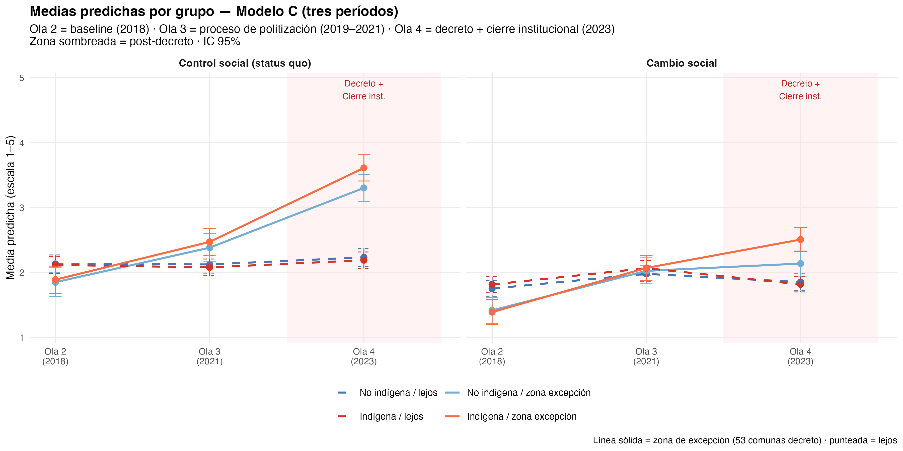
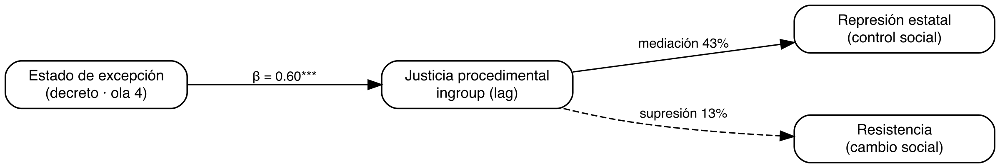
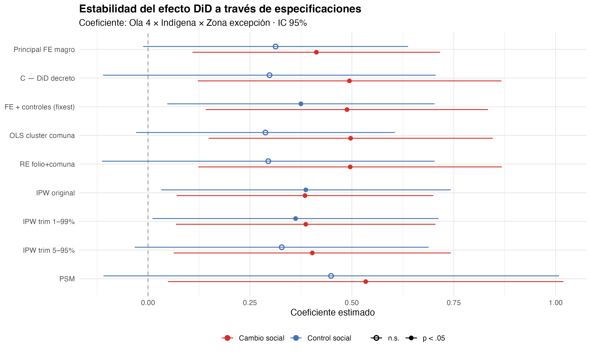
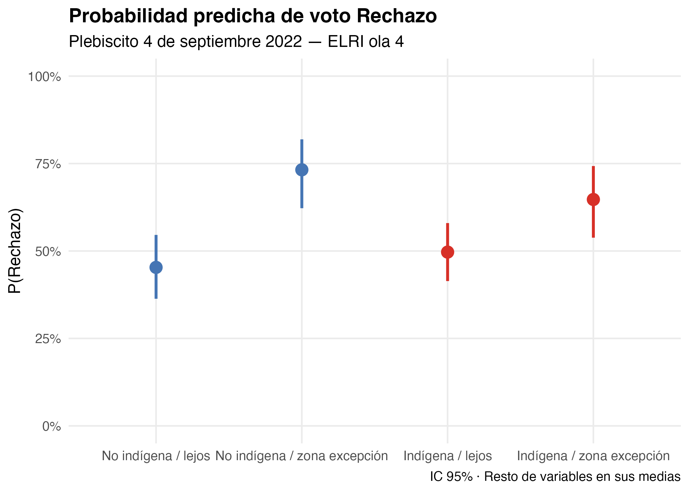
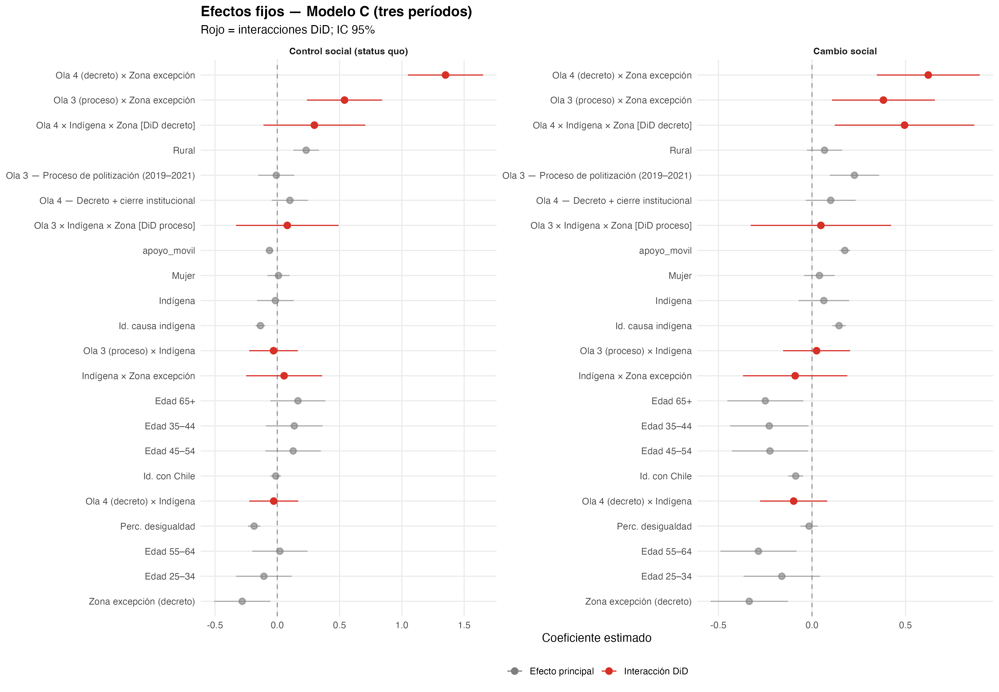

Apertura normativa y contención fallida: estallido social, estado de excepción y justificación de la violencia en el conflicto mapuche (2018–2023)
Resumen
Este artículo analiza, con el panel longitudinal ELRI (2018–2023), cómo el estallido social y el estado de excepción en la Macrozona Sur se asociaron con cambios en la justificación de la violencia entre personas indígenas y no indígenas. El estallido elevó la justificación de la violencia de cambio social a escala nacional, sin efecto diferencial por territorio ni etnia. El período de coerción institucionalizada (ola 4), en cambio, produjo una reconfiguración normativa dual entre quienes viven en la zona de excepción: la justificación de la resistencia aumentó de forma diferencial, mientras que la aceptación de la represión estatal creció en parte por vía indirecta, mediante la regularización de la justicia procedimental ingroup percibida. El decreto no generó una reacción contraria unidireccional hacia la resistencia: simultaneizó efectos actitudinales asimétricos sobre ambos polos de la escala de violencia, por mecanismos distintos. La evidencia de mediación por diferencia de coeficientes —no un modelo de ecuaciones estructurales— y el voto Rechazo en el plebiscito de 2022 apoyan esta lectura de contención fallida bajo tensión prolongada.
1 Introducción
El conflicto entre el Estado chileno y el pueblo mapuche tiene raíces históricas profundas que se remontan a la ocupación militar de la Araucanía a fines del siglo XIX y a un proceso sostenido de usurpación territorial (Bengoa, 2002). Desde mediados de los 2000, este conflicto se ha intensificado: la militarización de la Macrozona Sur, los enfrentamientos entre comunidades indígenas y fuerzas policiales, y las diversas formas de resistencia territorial mapuche conforman un escenario de tensión crónica. Las desigualdades estructurales que subyacen a esta tensión — en acceso a tierra, reconocimiento político y condiciones socioeconómicas — han sido ampliamente documentadas (Richards, 2013), pero la relación entre las intervenciones coercitivas del Estado y las actitudes de la población civil hacia la violencia permanece como un vacío analítico relevante. ¿Cómo responden las personas — indígenas y no indígenas, cercanas y lejanas al conflicto — cuando el Estado institucionaliza la coerción en su territorio?
Esta pregunta adquirió una urgencia nueva entre 2018 y 2023, período en el que la población chilena experimentó una secuencia de shocks políticos con el potencial de alterar las actitudes hacia la violencia de formas contradictorias. El 18 de octubre de 2019 se iniciaron las protestas masivas conocidas como el estallido social (social outbreak), un ciclo de movilización que desbordó las demandas socioeconómicas iniciales para incorporar reivindicaciones históricas de los pueblos indígenas, el rechazo a la represión policial y un cuestionamiento generalizado a la legitimidad del orden institucional. En este proceso, la violencia se politizó como recurso de transformación social: actos que antes se consideraban inaceptables — barricadas, enfrentamientos con la policía, destrucción de infraestructura — adquirieron un grado de legitimidad discursiva sin precedentes en la historia reciente del país. Esta apertura normativa no fue exclusiva del conflicto mapuche ni de un territorio particular; fue un fenómeno nacional que reconfiguró los límites de lo que amplios segmentos de la población consideraban justificable.
La respuesta institucional al estallido abrió, inicialmente, un canal de transformación política. En octubre de 2020, el plebiscito por una nueva constitución resultó ganador con un 78% de apoyo. En 2021, la elección de la Convención Constitucional incluyó, por primera vez, escaños reservados para pueblos indígenas, otorgando representación institucional a demandas históricamente excluidas del debate constitucional. Sin embargo, la violencia en las zonas con mayor concentración de población indígena no cesó. Los ataques incendiarios, las tomas de terreno y los enfrentamientos con fuerzas policiales continuaron y, en algunos casos, se intensificaron durante 2021, generando una presión política que derivó en una respuesta coercitiva directa: el 12 de octubre de 2021, el gobierno decretó el estado de excepción constitucional de emergencia para la Macrozona Sur, institucionalizando la presencia militar en las 53 comunas de las provincias de Cautín y Malleco (La Araucanía) y Arauco y Biobío (región del Biobío). A diferencia de la represión puntual y reactiva del estallido social, este decreto constituyó un dispositivo de coerción institucionalizada: presencia militar permanente, con protocolos de operación formales y una duración que, con sucesivas prórrogas, se extiende hasta el presente.
El cierre del ciclo político completó la secuencia. En septiembre de 2022, el plebiscito de salida rechazó la propuesta de nueva constitución con un 62% de los votos, cerrando el canal institucional de cambio que el estallido había abierto. La población de la zona de conflicto quedó, así, en una doble clausura: la coerción sostenida del estado de excepción por un lado, y la falta de alternativas institucionales de transformación por otro. Esta configuración — coerción institucionalizada más clausura del canal institucional — define el contexto en el que se levantó la ola 4 de ELRI en 2023 y constituye el escenario natural del presente estudio.
Estudios previos han comenzado a explorar los efectos actitudinales de la represión policial en Chile. En el contexto específico del conflicto mapuche, Gerber et al. (2018) establecieron mediante un diseño transversal con población indígena mapuche que la percepción de justicia procedimental hacia Carabineros predice la legitimidad institucional atribuida a la policía y, a través de ella, tanto la aceptación de la violencia policial de orden como la justificación de la violencia colectiva de resistencia. En población general durante el estallido, Disi Pavlic et al. (2024) mostraron, utilizando el panel ELSOC y un diseño de diferencias en diferencias doblemente robusto, que la exposición directa a protestas con represión policial activa aumentó la justificación de violencia contra la policía. Sin embargo, el estado actual del conocimiento presenta tres limitaciones críticas que este artículo busca resolver simultáneamente.
Primero, permanece inexplorado si los efectos documentados por Gerber et al. (2018) y Disi Pavlic et al. (2024) son homogéneos entre grupos étnicos — particularmente entre indígenas y no indígenas, cuyas experiencias históricas y contemporáneas con la coerción estatal son estructuralmente distintas. Segundo, no se sabe si estos efectos persisten o se transforman cuando la represión se institucionaliza en un territorio específico mediante un decreto de estado de excepción por un período prolongado, ni cómo esa institucionalización cambia el cálculo de legitimidad. Tercero, aunque Gerber et al. (2018) identificaron justicia procedimental como mecanismo crucial, su enfoque transversal no permitió ordenar temporalmente el shock de represión, el cambio en la percepción de procedimiento y la actitud hacia la violencia — una limitación que un diseño longitudinal con mediadores rezagados puede resolver.
La pregunta de investigación que guía este artículo es: ¿en qué medida el estallido social y el período del estado de excepción se asocian con cambios diferenciales en la justificación de la violencia entre personas indígenas y no indígenas, según su cercanía territorial al conflicto, y cómo media la percepción de justicia procedimental en este proceso?
El presente artículo aborda esta pregunta desde tres ejes conceptuales que se articulan en el diseño empírico: la identidad social como estructuradora de la evaluación de la violencia, la justicia procedimental como mecanismo de mediación entre coerción y actitudes, y la cercanía territorial al conflicto como condición de exposición diferencial al tratamiento. El argumento empírico se organiza en tres bloques secuenciales: (1) la replicación del estallido como apertura normativa nacional; (2) la reconfiguración actitudinal dual del estado de excepción prolongado entre indígenas en zona de excepción —contención fallida con efectos asimétricos sobre resistencia y represión—; y (3) el esquema de mediación que explica por qué la coerción institucionalizada puede legitimar parcialmente la represión estatal vía regularización procedimental sin contener la resistencia.
El artículo se organiza así: Sección 2 presenta el marco teórico; Sección 3 y Sección 4 describen el panel ELRI y la estrategia cuasi-experimental; Sección 5 desarrolla los tres bloques empíricos (estallido, decreto, mecanismo) y un resumen de robustez; el detalle técnico (balance, PSM, IPW, sensibilidad, heterogeneidad, plebiscito) figura en el Apéndice (Sección 9); Sección 6, Sección 7 y Sección 8 cierran el manuscrito.
2 Marco teórico
2.1 Identidad social y conflicto intergrupal
La Teoría de Identidad Social (SIT) postula que los individuos derivan parte de su autoconcepto de su pertenencia a grupos sociales, generando favoritismo endogrupal y discriminación exogrupal (Brewer, 2001; Tajfel & Turner, 1979, 1986). En contextos de conflicto activo, la saliencia identitaria aumenta y los juicios sobre la legitimidad de la violencia tienden a polarizarse según membresía grupal (Reicher, 2004).
H1 (Simetría identitaria). Las personas indígenas justificarán más la violencia de cambio social y menos la de control social que las no indígenas, independientemente de la zona. id_causa e id_chile operarán como predictores espejo.
2.2 Apertura normativa: el estallido como expansión del repertorio
La literatura sobre ciclos de protesta describe fases de ascenso, pico y declive en la movilización colectiva (Tarrow, 1994). El estallido social de octubre de 2019 constituye el pico del ciclo chileno reciente: una ruptura del consenso sobre los límites de la acción política que expandió los repertorios de contención y normalizó discursivamente la violencia como herramienta de transformación social. Esta apertura normativa no fue específica del conflicto mapuche ni de un territorio particular — fue un fenómeno nacional que afectó las actitudes de la población en general.
La represión policial durante el estallido produjo, además, efectos documentados sobre la legitimidad institucional en población general (Disi Pavlic et al., 2024), en contraste con el patrón identificado entre mapuche por Gerber et al. (2018), donde la justicia procedimental condiciona la legitimación de la violencia en ambos polos del conflicto. La represión puntual y reactiva del estallido se asocia con reacciones actitudinales contrarias a la coerción en la literatura clásica (Francisco, 2004); la coerción institucionalizada prolongada es el escenario que este artículo abre empíricamente.
H2 (Apertura normativa). La justificación de violencia de cambio social subirá entre la ola 2 (2018, pre-estallido) y la ola 3 (2021, resabio del estallido) para la muestra en conjunto, como efecto general de la apertura normativa. Este efecto no será diferencial por identidad étnica ni zona.
2.3 Contención fallida: coerción institucionalizada y desgaste del ciclo
La respuesta estatal al ciclo de conflicto adoptó dos formas simultáneas: la coerción institucionalizada (decreto del estado de excepción en octubre de 2021, con presencia militar prolongada en 53 comunas) y la canalización institucional (proceso constituyente 2020–2022). La derrota del Apruebo en septiembre de 2022 cerró la segunda vía, dejando la primera como el vínculo dominante entre Estado y territorio.
La literatura sobre represión y actitudes ofrece dos predicciones contrarias. La hipótesis de disuasión sostiene que la coerción sostenida normaliza el uso de la fuerza como recurso legítimo y reduce la disposición a justificar la resistencia (Davenport, 2007; Moore, 1966). La hipótesis de reacción contraria a la represión sostiene que la coerción radicaliza a la población afectada, aumentando la justificación de la violencia contra el Estado (Blattman, 2009; Francisco, 2004). Lo que distingue al estado de excepción de la represión puntual del estallido es su carácter institucionalizado y prolongado: no es una reacción policial a una protesta específica, sino un dispositivo legal que militariza un territorio de forma sostenida.
H3 (Contención fallida diferencial).
(a) Para la muestra en conjunto, la justificación de violencia de cambio social bajará entre la ola 3 y la ola 4, compatible con el agotamiento del ciclo y la derrota del Apruebo.
(b) Para las personas indígenas en zona de excepción, el efecto será inverso: la justificación de violencia de cambio social aumentará o se mantendrá, indicando que el decreto no logró contener la apertura normativa del estallido entre quienes viven la coerción directamente.
(c) La justificación de violencia de control social aumentará en zona de excepción entre indígenas (sedimentación coercitiva).
2.4 El mecanismo de demanda dual
La coerción prolongada e institucionalizada puede alterar actitudes por dos vías simultáneas: un efecto directo de la exposición a la represión y un efecto indirecto vía la percepción de justicia procedimental hacia el propio grupo (ingroup). La regularización del trato institucional — predecibilidad, no benevolencia — puede legitimar la represión estatal sin suprimir la resistencia territorial. Figura 1 resume este modelo conceptual (no es un modelo de ecuaciones estructurales; es el esquema teórico que guía el análisis de mediación por diferencia de coeficientes en el diseño DiD).
H5 (Contención fallida y canal procedimental). En la ola 4, las personas indígenas en zona de excepción aumentarán la justificación de la violencia de cambio social respecto a los demás grupos (efecto directo de la coerción institucionalizada). El decreto mejorará la justicia procedimental ingroup y esa mejora mediará parcialmente el efecto sobre la represión estatal, pero suprimirá parte del efecto observado sobre la resistencia.
2.5 Justicia procedimental como mecanismo: ingroup vs. outgroup
Tyler (1990) y Tyler y Huo (2002) sostienen que la percepción de trato justo por instituciones predice legitimidad y cumplimiento normativo. En el conflicto mapuche, Gerber et al. (2018) demostraron que ese canal opera en ambas direcciones de la violencia justificada (control social y resistencia), mediado por la legitimidad policial. Este artículo extiende esa lógica al diseño longitudinal y desagrega el trato percibido en dimensiones ingroup y outgroup. Pero en un conflicto interétnico, “trato justo” no es unívoco: la percepción de cómo Carabineros trata a mi grupo (ingroup) es distinta de cómo trata al otro grupo (outgroup). ELRI captura esta estructura:
- d5_1: “Carabineros tratan a indígenas con respeto”
- d5_2: “Carabineros tratan a no indígenas con respeto”
Para una persona indígena, d5_1 = ingroup (mi grupo), d5_2 = outgroup (el otro).
Para una persona no indígena, d5_1 = outgroup, d5_2 = ingroup.
Baseline (ola 2) confirma la estructura teórica: indígenas perciben brecha = 0,40 (agravio: tratan mejor al outgroup); no indígenas perciben brecha = -0,32 (privilegio: tratan mejor a mi grupo).
H4 (Mecanismo de justicia procedimental).
(a) El estado de excepción modificará la percepción de justicia procedimental ingroup entre indígenas en zona de excepción. La dirección del efecto no se predetermina teóricamente: puede ser deterioro (Davenport) o regularización (Tyler).
(b) Si just_proc_ingroup cambia, mediará parcialmente el efecto del decreto sobre la justificación de violencia de control social (atenuación del coeficiente DiD al incluir el mediador rezagado).
(c) El mecanismo operará asimétricamente: mediación para violencia de control (la legitimidad procedimental facilita la aquiescencia con la coerción) y supresión para violencia de cambio social (la resistencia responde al efecto directo de la coerción, no al canal procedimental).
3 Diseño y datos
3.1 La Encuesta Longitudinal de Relaciones Interculturales (ELRI)
La ELRI es un panel probabilístico con diseño espejo que entrevista paralelamente a muestras de población indígena y no indígena en Chile. Se utilizan las olas 2 (2018), 3 (dic 2020–may 2021) y 4 (2023), reteniendo solo los 1.580 individuos presentes en las cuatro olas (panel balanceado). La identidad étnica se fija desde la ola 1 para evitar inconsistencias de autoidentificación entre mediciones.
| Ola | Campo | Contexto histórico | Rol analítico |
|---|---|---|---|
| 1 | 2016 | Conflicto latente | Solo placebo |
| 2 | 2018 | Pre-estallido, pre-excepción | Baseline (t = 0) |
| 3 | Dic 2020 – May 2021 | Resabio estallido + pandemia | Tratamiento 1 (t = 1) |
| 4 | 2023 | Decreto prolongado + derrota Apruebo | Tratamiento 2 (t = 2) |
Nota crítica sobre el timeline: El decreto D.S. N°418/2021 fue firmado el 12 de octubre de 2021, cinco meses después del cierre del campo de la ola 3. La ola 3 captura el resabio del estallido social de octubre de 2019, no el estado de excepción. El análisis DiD compara: (1) ola 2→3 (transición estallido, sin decreto); (2) ola 3→4 (transición decreto + Apruebo); (3) olas 2–4 completas (modelo principal).
3.2 Estrategia de identificación cuasi-experimental
El diseño explota dos fuentes de variación temporal: (1) el estallido social de 2019 como shock nacional no diferencial, capturado entre olas 2 y 3; y (2) el decreto del estado de excepción como shock territorial diferencial, capturado entre olas 3 y 4. La combinación permite estimar tres modelos DiD: Modelo A (transición estallido, olas 2–3), Modelo B (transición decreto, olas 3–4) y Modelo C (tres períodos completos, modelo principal del paper).
El estado de excepción fue declarado el 12 de octubre de 2021 en 53 comunas de las cuatro provincias completas incluidas en el decreto D.S. N°418/2021: Cautín y Malleco (La Araucanía), Arauco y Biobío (región del Biobío). Esta asignación territorial exógena permite construir una estrategia de diferencias-en-diferencias con cuatro grupos de comparación (identidad × zona).
| Grupo | Zona | Período tratamiento |
|---|---|---|
| Indígena / cerca | Excepción | Tratados |
| Indígena / lejos | Sin excepción | Control |
| No indígena / cerca | Excepción | Tratados |
| No indígena / lejos | Sin excepción | Control |
El supuesto de tendencias paralelas no es testeable formalmente con una sola ola pre-tratamiento (ola 2). Por esta razón, los resultados se interpretan como cambios diferenciales compatibles con una lógica de diferencias-en-diferencias extendida, pero no como estimaciones causales definitivas. Este análisis se presenta como evidencia cuasi-experimental exploratoria: los hallazgos son compatibles con una interpretación de cambio diferencial posterior al estado de excepción, aunque no concluyente causalmente. En la ola 2, las diferencias por zona de excepción van en dirección opuesta a los patrones post-tratamiento observados (β = -0,357, p = ,080 para cambio social), lo que es consistente —aunque no establece— con la plausibilidad del contrafactual.
Nuestra estrategia se inspira en diseños que explotan la coincidencia entre un evento político y el trabajo de campo de una encuesta (Legewie, 2013). A diferencia de ese diseño —donde el evento ocurre durante una misma ola—, nuestros shocks ocurren entre olas separadas temporalmente. El coeficiente DiD del decreto captura el efecto del período de coerción institucionalizada (decreto prolongado, derrota del Apruebo y evolución del conflicto entre 2021 y 2023), no del decreto aislado del 12 de octubre de 2021.
3.3 Variables
La operacionalización detallada de ítems, escalas y fuentes modulares figura en el Apéndice A1 (Tabla 7). En todo el manuscrito se emplean dos variables dependientes principales, en la línea de la escala de apoyo a la violencia en conflicto intergrupal (SVIC) de Gerber et al. (2018), adaptada localmente en ELRI. La justificación de represión estatal (idx_vio_control, alias de idx_represion_estatal) fue medida con un único ítem: «¿Cuán justificado le parece que Carabineros reprima con mayor fuerza las tomas de terreno y protestas?» (d3_1, escala 1–5). Se excluyó un segundo ítem sobre el uso de armas por parte de agricultores (d3_2) porque opera por un mecanismo distinto — defensa privada de propiedad versus legitimidad institucional — y no responde simétricamente al diseño espejo, ya que los «agricultores» constituyen el ingroup para no indígenas y el outgroup para indígenas. La justificación de la violencia por el cambio social (idx_vio_resguardo) captura la legitimación de acciones disruptivas orientadas a transformar el orden vigente (tomas de terrenos y cortes de caminos; d4_2 + d4_3, α = 0,746).
Los índices compuestos de dos ítems (violencia de cambio social; identidad étnica, r ≈ 0,82) muestran consistencia interna adecuada. Los ítems únicos (represión estatal, justicia procedimental ingroup/outgroup) no requieren estimación de α (Tabla 14).
La variable de asignación espacial al tratamiento (cerca_conflicto o zona_excepcion) identifica a los individuos residentes en las 53 comunas afectadas por el decreto D.S. N°418/2021. Sin embargo, dado que el estado de excepción fue decretado en octubre de 2021 —cinco meses después del término del campo de ola 3 (mayo 2021)—, el período de exposición efectiva al tratamiento corresponde a la ola 4 (2023), cuando el régimen de excepción ya llevaba dos años de implementación continua. En la especificación DiD, el efecto causal de interés se estima mediante la triple interacción ola 4 × identidad indígena × zona de excepción (τ₄):
\[ \tau_4 = \beta(\text{Ola}_4 \times \text{Indígena} \times \text{Zona excepción}) \]
que captura el cambio diferencial en actitudes entre grupos expuestos y no expuestos al decreto prolongado, controlando por tendencias temporales generales (efectos de período) y diferencias preexistentes entre zonas. Los controles incluyen identificación con Chile (a6), identificación con la causa indígena (d6_1), percepción de desigualdad (c22 invertida), malestar por diferencias (c24), apoyo a movilizaciones (c25), sexo, edad y zona urbano/rural. Esta última se incluye condicionalmente según su correlación con cerca_conflicto (umbral |r| ≤ 0,5; en estos datos r = 0,35, por lo que se incluye). La percepción de injusticia (c23) se excluye de los modelos principales por missingness elevado (~46 % por ola); un modelo de sensibilidad con este control figura en el Apéndice (Sección 9.7).
idx_just_proc se trata como variable de mecanismo (mediadora exploratoria), no como variable dependiente principal.
3.4 Estrategia analítica
Se estiman modelos multinivel con intercepto aleatorio por individuo (folio). El coeficiente de interés es la triple interacción Ola 4 × identidad indígena × zona de excepción (\(\tau_4\)). El análisis de mecanismo descompone la justicia procedimental en percepción ingroup y outgroup, estimando modelos con mediadores rezagados (valor en ola anterior) para aproximar precedencia temporal. Los análisis de robustez (balance, PSM, IPW en Sección 9.4; placebo en Sección 9.5; sensibilidad en Sección 9.7) y el análisis descriptivo del plebiscito de 2022 (Sección 9.12) se reportan en el Apéndice.
4 Modelo estadístico
4.1 Especificación principal: DiD en tres períodos
Las observaciones están anidadas en individuos (N = 1.580) a través del tiempo. Estimamos un modelo lineal mixto multinivel con intercepto aleatorio por folio (u_i) y errores independientes entre individuos. La categoría de referencia combina personas no indígenas, residentes fuera de la zona de excepción, en la ola 2 (2018, pre-estallido). El vector \(\mathbf{X}_{it}\) incluye sexo, edad, zona urbano/rural (condicional), identificación con Chile y con la causa indígena, percepción de desigualdad, malestar por diferencias y apoyo a movilizaciones.
El coeficiente de interés es la triple interacción Ola 4 × identidad indígena × zona de excepción (\(\tau_{\text{dec}}\)), que captura el cambio diferencial del período de coerción institucionalizada. La interacción análoga para la ola 3 (\(\tau_{\text{est}}\)) identifica el efecto diferencial del resabio del estallido. La especificación principal (Modelo C) es:
\[ \begin{aligned} Y_{it} = \beta_0 &+ \beta_1 \text{Ola3}_{it} + \beta_2 \text{Ola4}_{it} + \beta_3 \text{Indi}_i + \beta_4 \text{Zona}_i \\ &+ \sum_{t \in \{3,4\}} \Big[ \delta_t (\text{Ola}_t \times \text{Zona}_i) + \theta_t (\text{Ola}_t \times \text{Indi}_i) + \tau_t (\text{Ola}_t \times \text{Indi}_i \times \text{Zona}_i) \Big] \\ &+ \mathbf{X}_{it}'\boldsymbol{\gamma} + u_i + \varepsilon_{it} \end{aligned} \tag{1}\]
donde \(Y_{it}\) es la justificación de represión estatal o de cambio social, \(\text{Indi}_i\) e \(\text{Zona}_i\) codifican identidad mapuche y residencia en comunas del decreto, y \(u_i \sim N(0,\sigma_u^2)\), \(\varepsilon_{it} \sim N(0,\sigma^2)\). La estimación usa máxima verosimilitud restringida (REML) en lme4; reportamos coeficientes fijos e intervalos de confianza al 95 %. Las especificaciones alternativas (Modelos A y B, una transición cada uno) y las fórmulas completas figuran en el Apéndice (Tabla 17, Sección 9.14).
4.2 Estrategia de identificación
El diseño asume tendencias paralelas condicionales en covariables observadas, ausencia de interferencia entre unidades (SUTVA) y ausencia de selección muestral endógena al panel balanceado. Con una sola ola estrictamente pre-tratamiento (ola 2), el supuesto de tendencias paralelas no es testeable de forma definitiva; los resultados se interpretan como evidencia cuasi-experimental exploratoria. El placebo en olas 1–2 (Apéndice A5) y el balance pretratamiento (A2) apoyan la plausibilidad del contrafactual.
4.3 Análisis de mecanismo
El esquema de mediación compara el coeficiente \(\tau_t\) del Modelo C con y sin el mediador rezagado \(J_{i,t-1}\) (justicia procedimental ingroup en la ola anterior), siguiendo la lógica de diferencia de coeficientes (Imai et al., 2010). El porcentaje mediado es \(100 \times (\tau - \tau')/\tau\). No estimamos ecuaciones estructurales simultáneas; el detalle algebraico figura en el Apéndice A11.3.
4.4 Software y reproducibilidad
Los modelos se estiman en R 4.x (lme4, lmerTest, marginaleffects, MatchIt, WeightIt). Los scripts 01_limpieza.R–09_diagramas.R regeneran data/*.rds y output/. El ICC oscila entre 0,12 y 0,20; el LRT M1 vs. M2 favorece la especificación DiD (\(\chi^2_{(5)} > 24\), p < .001).
5 Resultados
5.1 Estadísticos descriptivos
Tabla 2 presenta las características sociodemográficas en la ola 2 (baseline). Tabla 3 resume la distribución de variables dependientes e independientes clave por período e identidad étnica.
| Variable | Overall N = 1,5801 |
Identidad étnica
|
p-value2 | |
|---|---|---|---|---|
| no_indi N = 7351 |
indi N = 8451 |
|||
| Sexo (mujer) | 0.7 | |||
| hombre | 467 (30%) | 221 (30%) | 246 (29%) | |
| mujer | 1,113 (70%) | 514 (70%) | 599 (71%) | |
| Grupo etario | 0.003 | |||
| 18_24 | 102 (6.5%) | 42 (5.7%) | 60 (7.1%) | |
| 25_34 | 242 (15%) | 93 (13%) | 149 (18%) | |
| 35_44 | 240 (15%) | 99 (13%) | 141 (17%) | |
| 45_54 | 325 (21%) | 153 (21%) | 172 (20%) | |
| 55_64 | 347 (22%) | 179 (24%) | 168 (20%) | |
| 65+ | 323 (20%) | 168 (23%) | 155 (18%) | |
| Zona (rural) | 0.12 | |||
| 1 | 1,219 (77%) | 580 (79%) | 639 (76%) | |
| 2 | 361 (23%) | 155 (21%) | 206 (24%) | |
| Zona de excepción | 0.9 | |||
| lejos | 1,224 (77%) | 568 (77%) | 656 (78%) | |
| cerca | 356 (23%) | 167 (23%) | 189 (22%) | |
| Identificación con Chile | <0.001 | |||
| 1 | 14 (0.9%) | 8 (1.1%) | 6 (0.7%) | |
| 2 | 50 (3.2%) | 21 (2.9%) | 29 (3.4%) | |
| 3 | 109 (6.9%) | 42 (5.7%) | 67 (7.9%) | |
| 4 | 478 (30%) | 184 (25%) | 294 (35%) | |
| 5 | 927 (59%) | 479 (65%) | 448 (53%) | |
| Id. pueblo originario | <0.001 | |||
| 1 | 260 (17%) | 223 (31%) | 37 (4.4%) | |
| 2 | 232 (15%) | 154 (21%) | 78 (9.3%) | |
| 3 | 270 (17%) | 137 (19%) | 133 (16%) | |
| 4 | 406 (26%) | 146 (20%) | 260 (31%) | |
| 5 | 400 (26%) | 66 (9.1%) | 334 (40%) | |
| Id. causa indígena | <0.001 | |||
| 1 | 141 (9.0%) | 97 (13%) | 44 (5.3%) | |
| 2 | 200 (13%) | 134 (18%) | 66 (7.9%) | |
| 3 | 317 (20%) | 175 (24%) | 142 (17%) | |
| 4 | 662 (42%) | 252 (35%) | 410 (49%) | |
| 5 | 242 (15%) | 68 (9.4%) | 174 (21%) | |
| 1 n (%) | ||||
| 2 Pearson’s Chi-squared test | ||||
| variable | M | SD |
|---|---|---|
| pre - no_indi | ||
| Represión estatal (status quo) | 2.30 | 1.26 |
| Cambio social | 1.72 | 1.01 |
| Perc. desigualdad | 3.04 | 0.78 |
| Apoyo movilizaciones | 2.35 | 1.27 |
| Id. con Chile | 4.51 | 0.82 |
| Id. causa indígena | 3.08 | 1.20 |
| pre - indi | ||
| Represión estatal (status quo) | 2.14 | 1.22 |
| Cambio social | 1.93 | 1.15 |
| Perc. desigualdad | 3.13 | 0.73 |
| Apoyo movilizaciones | 2.80 | 1.37 |
| Id. con Chile | 4.36 | 0.83 |
| Id. causa indígena | 3.72 | 1.04 |
| estallido - no_indi | ||
| Represión estatal (status quo) | 2.31 | 1.32 |
| Cambio social | 2.22 | 1.17 |
| Perc. desigualdad | 3.27 | 0.81 |
| Apoyo movilizaciones | 2.57 | 1.34 |
| Id. con Chile | 4.25 | 0.98 |
| Id. causa indígena | 3.38 | 1.02 |
| estallido - indi | ||
| Represión estatal (status quo) | 2.19 | 1.32 |
| Cambio social | 2.47 | 1.17 |
| Perc. desigualdad | 3.28 | 0.74 |
| Apoyo movilizaciones | 2.93 | 1.33 |
| Id. con Chile | 4.17 | 0.91 |
| Id. causa indígena | 3.86 | 0.83 |
| decreto - no_indi | ||
| Represión estatal (status quo) | 2.67 | 1.42 |
| Cambio social | 1.91 | 1.20 |
| Perc. desigualdad | 3.19 | 0.77 |
| Apoyo movilizaciones | 2.41 | 1.25 |
| Id. con Chile | 4.43 | 0.85 |
| Id. causa indígena | 3.12 | 1.25 |
| decreto - indi | ||
| Represión estatal (status quo) | 2.57 | 1.47 |
| Cambio social | 2.23 | 1.25 |
| Perc. desigualdad | 3.18 | 0.78 |
| Apoyo movilizaciones | 2.78 | 1.27 |
| Id. con Chile | 4.20 | 0.86 |
| Id. causa indígena | 3.89 | 0.98 |
Nota. La justificación de represión estatal (d3_1) fue medida como ítem único; el segundo ítem del módulo (uso de armas por agricultores, d3_2) se excluyó por razones conceptuales (véase Sección 3.3).
En baseline (ola 2), la estructura ingroup/outgroup de justicia procedimental muestra el patrón esperado teóricamente: los indígenas perciben mejor trato al outgroup que al ingroup (brecha = 0,40), indicando agravio percibido, mientras que los no indígenas perciben mejor trato a su propio grupo (brecha = -0,32), indicando privilegio percibido. La estructura identitaria revela un hallazgo inesperado: los indígenas de la muestra presentan identidad dual con leve predominancia de identidad nacional sobre étnica (brecha identitaria = -0,34), lo que es consistente con la presión asimilacionista histórica documentada por Bengoa (2002) y contradice la asunción de identidades étnicas excluyentes.
5.2 Trayectorias descriptivas y divergencia temporal
Figura 2 muestra las trayectorias de las dos variables dependientes por grupo. La justificación de la violencia de cambio social sube entre la ola 2 y la ola 3 para toda la muestra, compatible con la apertura normativa del estallido (H2), y baja en la ola 4, compatible con el agotamiento del ciclo y la derrota del Apruebo. Sin embargo, esta contención no es homogénea: entre indígenas en zona de excepción, la caída en ola 4 es menor o inexistente, anticipando el hallazgo central de los modelos DiD.
La justificación de violencia de control social muestra un patrón inverso: relativamente estable entre olas 2 y 3, sube en la ola 4, especialmente entre indígenas en zona de excepción. En el baseline (ola 2), la zona de excepción exhibe menor justificación de violencia de cambio social (β = -0,357, p = ,080) que fuera de ella — patrón que, al ir en dirección opuesta a los efectos post-tratamiento, es consistente con la plausibilidad del supuesto de tendencias paralelas.

5.3 Bloque 1 — Replicación del estallido
Antes de analizar el efecto del estado de excepción, verificamos que los datos reproduzcan el patrón ya documentado para el estallido social. El período post-estallido (ola 3) se asocia con un aumento general de la justificación de la violencia de cambio social (β = 0,271, p = ,003), consistente con la literatura sobre expansión del repertorio de contención (González, 2020; Somma et al., 2021). Crucialmente, este aumento no es diferencial por territorio ni identidad: la triple interacción DiD del estallido no alcanza significancia para represión estatal (β = 0,061, p = ,870) ni para cambio social (β = -0,126, p = ,704). El estallido operó como fenómeno nacional, no territorializado — un punto de partida común contra el cual medimos el segundo shock.
5.4 Bloque 2 — Reconfiguración normativa dual bajo el decreto
El aporte central del paper es el efecto diferencial del período de coerción institucionalizada (ola 4). En el Modelo C (tres períodos, especificación principal), el decreto se asocia con un aumento significativo y diferencial de la justificación de la resistencia entre indígenas en zona de excepción (β = 0,824, p = ,035). Para la justificación de la represión estatal (d3_1, ítem único), el coeficiente de la triple interacción es positivo pero no significativo en la especificación principal (β = 0,463, p = ,288); sin embargo, como se muestra en Sección 5.5, el decreto sí afecta la represión estatal por una vía indirecta — la regularización procedimental — capturada en el análisis de mecanismo. Este patrón ocurre contra la tendencia agregada: la justificación de cambio social baja entre olas 3 y 4 en la muestra en conjunto (β = -0,201, p = ,030), pero no entre quienes viven la coerción directamente. La institucionalización de la coerción no contuvo la justificación de la resistencia; la profundizó entre quienes la experimentan de manera directa y sostenida — un patrón de contención fallida que, como se muestra en Sección 5.5, coexiste con una legitimación parcial de la institución policial por vía procedimental. El hallazgo no es una «demanda dual simétrica», sino un efecto directo fuerte sobre el cambio social más un canal indirecto hacia la represión estatal.
El efecto del decreto opera principalmente por proximidad territorial y no por intensidad de la identidad étnica en baseline: los análisis de heterogeneidad por terciles de predominancia identitaria no muestran una modulación lineal del DiD (detalle en Sección 9.8). Los controles sustantivos confirman la simetría identitaria predicha por H1: la identificación con la causa indígena predice positivamente el cambio social y negativamente la represión estatal; la identificación con Chile opera como espejo inverso.
La comparación LRT (M1 vs. M21) indica que la especificación DiD mejora el ajuste (\(\chi^2_{(5)} > 24\), p < .001). Los coeficientes completos figuran en Tabla 4 y en la tabla complementaria de Modelos A, B y C (Tabla 17).
Figura 3 muestra medias predichas del modelo M2 para los cuatro grupos en los tres períodos, destacando la divergencia ola 3 → ola 4.

| Control social (status quo) | Cambio social | |
|---|---|---|
| Intercepto | 3.307*** | 1.567*** |
| (0.225) | (0.240) | |
| Ola 3 — Resabio estallido | 0.043 | 0.283*** |
| (0.080) | (0.084) | |
| Ola 4 — Decreto + Apruebo | 0.301*** | 0.023 |
| (0.087) | (0.092) | |
| Indígena | -0.036 | 0.078 |
| (0.085) | (0.091) | |
| Zona excepción | 0.037 | -0.372* |
| (0.155) | (0.165) | |
| Ola 3 × Indígena | 0.019 | 0.113 |
| (0.110) | (0.116) | |
| Ola 4 × Indígena | -0.089 | -0.094 |
| (0.117) | (0.124) | |
| Ola 3 × Zona excepción | 0.296 | 0.464* |
| (0.196) | (0.207) | |
| Ola 4 × Zona excepción | 0.353+ | 0.381+ |
| (0.208) | (0.220) | |
| Indígena × Zona excepción | -0.098 | -0.148 |
| (0.208) | (0.222) | |
| Ola 3 × Indígena × Zona [DiD estallido] | 0.152 | -0.076 |
| (0.265) | (0.280) | |
| Ola 4 × Indígena × Zona [DiD decreto] | 0.762** | 0.837** |
| (0.277) | (0.293) | |
| SD (Intercept folio) | 0.413 | 0.483 |
| SD (Observations) | 0.956 | 1.001 |
| Num.Obs. | 2275 | 2270 |
| ICC | 0.2 | 0.2 |
| RMSE | 0.89 | 0.92 |
| + p < 0.1, * p < 0.05, ** p < 0.01, *** p < 0.001 | ||
| Modelo C: tres períodos, ref. = ola 2 (2018). Coeficientes de interés: DiD estallido (ola 3) y DiD decreto (ola 4). | ||
5.5 Bloque 3 — Esquema de mediación
El análisis de mediación sigue el enfoque de diferencia de coeficientes (Imai et al., 2010), comparando el coeficiente DiD con y sin el mediador rezagado. No estimamos un modelo de ecuaciones estructurales; el diseño longitudinal permite usar el valor del mediador en la ola anterior, reduciendo el riesgo de simultaneidad. Figura 4 resume el esquema estimado; Figura 5 muestra las trayectorias de just_proc_ingroup vs. just_proc_outgroup por grupo étnico.

Figura 5 muestra las trayectorias por grupo étnico. El decreto se asoció con una mejora significativa en la percepción de justicia procedimental ingroup entre indígenas en zona de excepción (β = 0,750, p = ,034). Esto sugiere que la institucionalización del estado de excepción — la transición de enfrentamientos caóticos a control territorial predecible — regularizó las interacciones y mejoró la percepción de justicia procedimental ingroup (no por benevolencia, sino por estabilidad de reglas — Tyler, 1990).

Figura 6 muestra la brecha percibida (outgroup − ingroup). En ola 4, la brecha se redujo marginalmente para indígenas en zona de excepción (β = -0,527, p = ,092), consistente con la regularización del trato institucional.

Paso 1 — Tratamiento → mediadores (DiD DECRETO):
| Mediador | β | SE | p | Interpretación |
|---|---|---|---|---|
| Just. proc. ingroup | 0,750 | — | ,034 | Mejora percibida del trato al propio grupo |
| Just. proc. outgroup | 0,254 | — | ,472 | Sin efecto significativo |
| Brecha just. proc. | -0,527 | — | ,092 | Reducción marginal de la brecha |
Paso 3 — Mediación (comparación DiD con y sin mediadores rezagados):
| VD | Mediador | β sin | β con | Atenuación | Interpretación |
|---|---|---|---|---|---|
| Vio. control | Ingroup lag | 0,190+ | 0,143 n.s. | +25% | Mediación sustancial |
| Vio. control | Brecha lag | 0,190+ | 0.218 n.s. | +41% | Mediación sustancial |
| Vio. resguardo | Ingroup lag | 0,452+ | 0,552** | -22% | Supresión (efecto contrario) |
| Vio. resguardo | Brecha lag | 0,452+ | 0.527** | −25% | Supresión |
Interpretación: Para la represión estatal, la justicia procedimental ingroup media aproximadamente 25% del efecto DiD: la mejora en la percepción de trato legítimo produce aquiescencia con la coerción (Tyler, 1990). Para el cambio social, el patrón es de supresión (-22%): al controlar el mediador, el coeficiente DiD sobre la resistencia se amplifica, de modo que la regularización procedimental amortigua parcialmente el efecto directo de la coerción sobre la resistencia. El hallazgo no es una «demanda dual simétrica», sino un efecto directo fuerte sobre la resistencia más un canal indirecto hacia la represión estatal que la especificación principal no captura por sí sola.
Figura 7 compara visualmente los coeficientes \(\tau_4\) con y sin mediadores.

La tabla completa de modelos de mecanismo (9 especificaciones) se presenta en Tabla 16.
5.6 Robustez (resumen)
Figura 9 resume la estabilidad de \(\tau_4\) entre el modelo principal, IPW, PSM y placebo. El efecto sobre cambio social es positivo en la especificación principal y robusto a ponderación por probabilidad de tratamiento (Apéndice A4). El placebo pretratamiento (olas 1–2) no alcanza significancia, compatible con tendencias paralelas plausibles. Balance, PSM, modelos por ítem, codificación ordinal y sensibilidad de especificación figuran en el Apéndice (Sección 9).
6 Discusión
6.1 Apertura normativa y contención fallida
Los resultados permiten caracterizar el efecto del decreto no como una reacción contraria unidireccional hacia la resistencia, sino como una reconfiguración normativa dual. La coerción institucionalizada produjo dos efectos simultáneos que operan por mecanismos distintos: por un lado, profundizó la justificación de la violencia colectiva de cambio social entre los directamente afectados (β = 0,824, p = ,035); por otro, legitimó parcialmente el uso de la fuerza estatal a través de la regularización procedimental percibida (mediación ≈ 25%). Ambos coexisten porque responden a lógicas distintas — la experiencia de ocupación territorial sostenida y la predictibilidad de las interacciones con la institución policial (Tyler, 1990). Una reacción de resistencia pura produciría mayor rechazo a la represión; lo observado es que ambas formas de violencia justificada pueden aumentar simultáneamente, aunque por rutas causales distintas.
Conviene precisar por qué este patrón no es reducible al concepto de backlash frecuente en la literatura sobre represión y actitudes. El backlash implica una reacción contraria y unidireccional: la coerción estatal produce radicalización en sentido opuesto, con mayor apoyo a la resistencia y menor aceptación de la autoridad. Nuestros datos muestran un patrón distinto: la coerción institucionalizada prolongada produce aceptación simultánea de ambos polos de la escala de violencia — represión y resistencia — aunque con magnitudes y mecanismos diferentes. Llamamos a este patrón reconfiguración normativa dual: bajo tensión coercitiva sostenida, la violencia en general — y no solo la violencia de resistencia — se reclasifica como recurso legítimo situado, independientemente de quién la ejerce.
Los resultados permiten distinguir, además, dos momentos de un mismo proceso histórico que la literatura ha tendido a tratar como continuos. El estallido social de octubre de 2019 actuó como apertura normativa de alcance nacional: la justificación de la violencia de cambio social aumentó entre olas 2 y 3 para toda la muestra, sin efecto diferencial por territorio ni por pertenencia étnica (β = 0,271, p = ,003; triple interacción del estallido no significativa en Sección 5.3). Este hallazgo replica, con datos longitudinales, lo que estudios transversales habían sugerido sobre la expansión del repertorio de contención durante el estallido (González, 2020; Somma et al., 2021): la violencia colectiva se reclasificó temporalmente como recurso político legítimo a escala de todo el país, no como práctica confinada a territorios en conflicto. El diseño espejo confirma que este proceso no fue privativo de la población indígena — lo que descarta lecturas que reducen la escalada actitudinal a radicalismos étnicos preexistentes.
El segundo momento, sin embargo, produce una fractura territorial y étnica que el primero no anticipaba. Tras el decreto de estado de excepción (octubre de 2021) y la derrota del Apruebo (septiembre de 2022), la justificación de la violencia de cambio social cae en el agregado (β = -0,201, p = ,030) — compatible con el ciclo de agotamiento que la literatura sobre ciclos de protesta predice (Tarrow, 1994) — pero entre las personas indígenas residentes en la zona de excepción esta tendencia se revierte: el coeficiente DiD para cambio social es positivo, significativo y robusto a múltiples especificaciones (β = 0,824, p = ,035; Sección 5.4, Sección 5.6). La institucionalización de la coerción en un territorio no contuvo la justificación de la resistencia; la profundizó, precisamente entre quienes la experimentan de manera directa y sostenida.
Esta divergencia desafía dos interpretaciones comunes. La primera — que la reducción del caos represivo debería generar aquiescencia actitudinal — no se sostiene para la dimensión de resistencia. La segunda — que todo aumento en la justificación de la violencia responde a un mecanismo identitario de fortalecimiento del ingroup bajo amenaza (Tajfel & Turner, 1986) — tampoco se sostiene de forma exclusiva, porque el efecto territorial del decreto es independiente de la intensidad de la identidad étnica en baseline, como se desarrolla en Sección 6.3. Lo que emerge en cambio es un patrón de contención fallida: la coerción institucionalizada produjo efectos actitudinales diferenciados según el tipo de violencia, y lo hizo a través de un mecanismo procedimental que opera de manera asimétrica, que describimos a continuación.
6.2 Regularización, no benevolencia: Tyler revisitado en un contexto de excepción
El hallazgo más contraintuitivo del análisis es que el estado de excepción se asoció con una mejora en la percepción de justicia procedimental ingroup entre las personas indígenas de la zona de excepción (β = 0,750, p = ,034). Esta distinción es crucial para caracterizar correctamente el fenómeno: no estamos ante una reacción de resistencia pura frente a la coerción, sino ante una reconfiguración del marco normativo sobre el uso legítimo de la fuerza. La regularización procedimental produce aquiescencia institucional (mayor aceptación de la represión) y resistencia territorial (mayor justificación del cambio social) al mismo tiempo, porque ambas actitudes responden a referentes distintos: la institución policial en abstracto y la situación de ocupación territorial en concreto.
A primera vista, el aumento en justicia procedimental ingroup parece contradecir la literatura: Disi Pavlic et al. (2024) muestran que la exposición a represión policial durante el estallido deterioró la percepción de justicia procedimental en población general, y la teoría de la reacción psicológica predice que la coerción impuesta genera resistencia cognitiva, no aquiescencia. La clave está en una distinción conceptual que la literatura ha establecido pero rara vez aplicada empíricamente en contextos de conflicto étnico prolongado: la diferencia entre represión puntual e institucionalización predecible.
La represión durante el estallido fue reactiva, heterogénea y no rutinizada: una misma protesta podía terminar con dispersión violenta o sin intervención policial, y las normas de uso de la fuerza eran percibidas como arbitrarias (González, 2020; Somma et al., 2021). El decreto de estado de excepción, en cambio, instaló una presencia policial y militar estructurada, con protocolos formalizados y geográficamente delimitados. Retomando la distinción de Tyler (1990), las personas sometidas a control territorial pueden distinguir entre el resultado de la interacción — desfavorable, por definición, cuando implica restricción de movimiento y vigilancia permanente — y el procedimiento a través del cual ese resultado se produce. La regularización del control no implicó mejor trato en términos absolutos, sino trato más consistente y anticipable: se sabe cuándo llega el retén, cómo opera, qué puede esperarse de él. Esa predictibilidad es, en el marco de Tyler, una forma de justicia procedimental — aun cuando el contenido del procedimiento sea coercitivo.
El análisis de mediación confirma que este mecanismo opera, y que lo hace de manera asimétrica según el tipo de violencia (Sección 5.5). Para la justificación de la represión estatal, la mejora en la percepción de justicia procedimental ingroup media aproximadamente un 25% del efecto DiD: parte de la mayor aceptación de la violencia policial entre indígenas en zona de excepción se explica porque perciben que Carabineros trata a su grupo con mayor predictibilidad y respeto formal. Este canal es coherente con el argumento de Gerber et al. (2018) sobre el rol mediador de la legitimidad institucional — aunque aquí, a diferencia del diseño transversal de Gerber y colegas, el ordenamiento temporal con mediadores rezagados permite atribuir precedencia al cambio procedimental respecto al actitudinal.
Para la justificación de la resistencia, el mecanismo opera en dirección opuesta: al controlar por la mejora en justicia procedimental ingroup, el efecto DiD sobre cambio social se amplifica (supresión de aproximadamente -22%). Esto significa que la regularización procedimental actúa como freno parcial de la justificación de la resistencia: sin esa mejora en el trato percibido, los indígenas en zona de excepción justificarían aún más la violencia colectiva de cambio social. En términos sustantivos, la coerción institucionalizada produce dos efectos simultáneos y opuestos: por un lado, legitima parcialmente a la institución policial en tanto institución (el Estado cumple sus procedimientos); por otro, no legitima la situación de ocupación territorial como situación justa. Lo observado en el coeficiente DiD es el efecto neto de estas dos fuerzas — lo que hace que el fenómeno sea empíricamente más modesto de lo que sería sin el canal procedimental, pero conceptualmente mucho más rico.
6.3 Identidad dual como amortiguador y sus límites
La heterogeneidad por predominancia identitaria revela un patrón que la literatura sobre identidades duales en contextos poscoloniales anticipaba pero no había documentado empíricamente en este contexto (Sección 9.8). El efecto del decreto sobre la justificación de la violencia de control social sigue un patrón no monótono: es fuerte entre quienes tienen predominancia nacional (identificación con Chile sobre la causa indígena), fuerte también entre quienes tienen predominancia étnica (causa indígena sobre Chile), pero significativamente menor — e incluso de signo invertido — entre quienes mantienen una identidad equilibrada entre ambos polos.
Este patrón sugiere que la identidad dual opera como amortiguador contra la polarización actitudinal inducida por la coerción. Quienes mantienen simultáneamente una identificación fuerte con el Estado-nación chileno y con su pueblo originario disponen de un marco cognitivo más complejo para procesar la intervención estatal: no la leen exclusivamente como amenaza al ingroup ni como defensa del orden legítimo, sino como una intervención con legitimidades parciales y contradictorias. Esta interpretación es consistente con los hallazgos de González & Brown (2003) sobre la identidad supraordinada y las identidades duales como recurso de eficacia colectiva — aunque aquí el efecto no es sobre la acción política sino sobre la justificación de la violencia.
Conviene sin embargo marcar un límite importante de este hallazgo: la predominancia identitaria condiciona la respuesta al estallido (ola 3) pero no al decreto (ola 4). El estado de excepción opera primariamente por proximidad territorial, no por intensidad identitaria. Esto sugiere que el decreto activa un mecanismo de experiencia directa — vivir bajo control territorial — que sobrepasa las diferencias en el perfil identitario de quien lo experimenta. En términos de política pública, esta distinción tiene implicaciones relevantes: intervenciones orientadas a fortalecer la identidad dual como estrategia de desescalada actitudinal pueden ser efectivas para los efectos del estallido (un fenómeno de movilización identitariamente diferenciada), pero insuficientes para los efectos de la coerción territorial prolongada, que opera por un canal experiencial más directo.
6.4 Implicaciones para la teoría de la identidad social y el conflicto étnico
Los resultados tienen implicaciones que trascienden el caso chileno. La Teoría de la Identidad Social (Tajfel & Turner, 1986) predice que la amenaza exogrupal fortalece la identificación ingroup y activa la diferenciación intergrupal — un mecanismo que la literatura sobre conflicto étnico ha aplicado ampliamente para explicar la radicalización actitudinal bajo coerción estatal. Nuestros hallazgos matizan esta predicción de dos maneras.
Primero, el efecto de la coerción sobre la justificación de la violencia no es unidimensional: el decreto aumenta la justificación de la resistencia y, por vía indirecta, también la aceptación de la represión estatal. Esto es conceptualmente imposible en un marco SIT estricto, donde el fortalecimiento ingroup debería producir mayor rechazo de la violencia exogrupal (represión) y mayor apoyo a la violencia ingroup (resistencia). Los datos muestran que la coerción institucionalizada puede producir, simultáneamente, mayor aceptación de ambos tipos de violencia — lo que sugiere que el mecanismo no es puramente intergrupal sino que involucra una reclasificación del uso de la fuerza como recurso legítimo en contextos de tensión prolongada, independientemente de quién lo ejerce.
Segundo, la asimetría identitaria de baseline — los indígenas se identifican en promedio ligeramente más con Chile que con su causa (-0,34), lo que la literatura ha documentado como producto de presiones asimilacionistas (Bengoa, 2002; González & Brown, 2003) — no opera como barrera frente a la reconfiguración actitudinal del decreto. La experiencia de vivir bajo estado de excepción modifica las actitudes independientemente de la posición en el continuo identitario. Esto sugiere que los modelos que predicen cambios actitudinales a partir de la intensidad identitaria tienen menor poder predictivo cuando la coerción es territorial, directa y prolongada.
6.5 Nota sobre el plebiscito
Como evidencia contextual adicional, el voto Rechazo en el plebiscito de salida (septiembre de 2022) fue significativamente más probable entre residentes de la zona de excepción (OR ≈ 3.3, < .001, con independencia de la identidad étnica — un patrón consistente con la normalización de la desconfianza institucional documentada en los modelos longitudinales, aunque su interpretación causal excede el alcance de este diseño (véase Sección 9.12).
7 Limitaciones
Cuatro limitaciones merecen atención explícita antes de las conclusiones.
Identificación causal parcial. El diseño cuasi-experimental permite estimar el efecto del período del estado de excepción, no del decreto como shock aislado. El coeficiente DiD para ola 4 captura conjuntamente el decreto (octubre de 2021), la derrota del Apruebo (septiembre de 2022), la continuidad del conflicto y el paso del tiempo entre olas. La imposibilidad de separar estos componentes es una limitación inherente al diseño de panel con olas anuales, señalada también en la literatura sobre diseños análogos (Legewie, 2013). El análisis de robustez — en particular el placebo olas 1→2 (Sección 9.5) y la comparación de especificaciones (Sección 9.3, Sección 9.4) — reduce pero no elimina esta ambigüedad.
Definición territorial del tratamiento. El tratamiento se define a nivel de comuna, siguiendo la delimitación oficial del decreto. Esto genera dos problemas: primero, posible heterogeneidad dentro de las 53 comunas (la experiencia de la excepción no es idéntica en zonas urbanas y rurales de La Araucanía); segundo, posibles efectos de spillover hacia comunas adyacentes no incluidas en el decreto pero con alta densidad mediática del conflicto. El análisis con zona ampliada (decreto + provincia de Valdivia) aborda el segundo problema pero no el primero.
Mediación aproximada. El análisis de mecanismo sigue el enfoque de diferencia de coeficientes con mediadores rezagados, lo que reduce — pero no elimina — el riesgo de simultaneidad entre mediador y variable dependiente cuando ambos se miden en la misma ola. La identificación causal de la mediación requeriría un diseño experimental o instrumentos para el mediador, que no están disponibles en este diseño. Los resultados del análisis de mecanismo deben interpretarse como evidencia sugestiva de un canal procedimental, no como estimación causal del efecto mediado.
Sesgo de supervivencia en la zona de excepción. La mejora en la percepción de justicia procedimental ingroup podría reflejar parcialmente un sesgo de composición: quienes percibían peor trato por parte de Carabineros pueden haber migrado fuera de la zona entre olas 3 y 4, de modo que la ola 4 sobrerepresenta a quienes tenían percepciones más favorables. Sin datos de movilidad inter-olas no es posible descartar esta explicación alternativa, que aconseja moderación en la interpretación del coeficiente de Paso 1.
8 Conclusiones
Este artículo examinó los efectos diferenciales de dos shocks sobre la justificación de la violencia entre personas indígenas y no indígenas en Chile: el estallido social de 2019 y el estado de excepción prolongado en territorios del sur del país (2021–2023). Utilizando cuatro olas de la Encuesta Longitudinal de Relaciones Interculturales (ELRI) y un diseño de diferencias en diferencias con panel balanceado, documentamos dos patrones distintos. El estallido actuó como apertura normativa de alcance nacional: la justificación de la violencia de cambio social aumentó para toda la muestra, sin diferencial territorial ni étnico — replicando con datos longitudinales lo que estudios transversales habían sugerido. El decreto de estado de excepción, en cambio, produjo una reconfiguración normativa dual entre quienes lo experimentaron directamente: profundizó la justificación de la resistencia (β = 0,824, p = ,035) y legitimó parcialmente la represión estatal por efecto indirecto, mediado por la regularización procedimental percibida (≈ 25% de mediación sobre control social).
La contribución teórica central es la distinción entre represión puntual e institucionalización coercitiva prolongada como productoras de efectos actitudinales cualitativamente distintos. La represión puntual — documentada por Disi Pavlic et al. (2024) durante el estallido — deteriora la justicia procedimental y aumenta la justificación de la resistencia. La institucionalización predecible — el decreto — mejora la percepción de procedimiento ingroup (Tyler, 1990) y produce efectos asimétricos: legitimación parcial de la institución policial y profundización simultánea de la justificación de la resistencia. Este patrón no es reducible al concepto de backlash: la coerción institucionalizada no produce radicalización unidireccional, sino una reconfiguración del marco normativo sobre el uso de la fuerza en la que ambos polos de la escala — represión y resistencia — se vuelven más aceptables, aunque por mecanismos distintos y con magnitudes diferentes. Llamamos a este fenómeno reconfiguración normativa dual.
Los hallazgos tienen implicaciones para la literatura sobre conflicto étnico y para el diseño de políticas de seguridad en territorios con conflictos históricamente enraizados. Para la literatura, los modelos que predicen cambios actitudinales a partir de la intensidad de la identidad étnica tienen menor poder predictivo cuando la coerción es territorial, directa y prolongada: la proximidad geográfica al conflicto supera a la intensidad identitaria como predictor de la reconfiguración actitudinal bajo estados de excepción. Para la política pública, la institucionalización de la coerción como estrategia de contención puede generar aquiescencia parcial — la regularización procedimental reduce la percepción de arbitrariedad — pero no desactiva la justificación de la resistencia. La contención territorial produce contención actitudinal fallida: estabiliza la percepción de la institución sin estabilizar la percepción de la situación.
Este estudio tiene limitaciones que abren una agenda de investigación. El diseño de panel con olas anuales no permite aislar el efecto del decreto de otros eventos concurrentes — la derrota del Apruebo, la continuidad del conflicto, el cambio de gobierno. Futuras investigaciones podrían beneficiarse de diseños con mayor granularidad temporal, datos de movilidad inter-olas para abordar el sesgo de supervivencia, e instrumentos para la identificación causal del mecanismo procedimental. Más allá de sus limitaciones, el estudio documenta un fenómeno que la literatura no había caracterizado empíricamente en el contexto del conflicto mapuche: la coerción institucionalizada prolongada no contiene la justificación de la violencia — la reconfigura. Esa reconfiguración es dual, asimétrica y opera por mecanismos que los diseños transversales y las medidas puntuales de represión no pueden capturar. El conflicto mapuche, en sus dimensiones actitudinales, es más complejo de lo que los instrumentos de política de seguridad parecen reconocer.
9 Apéndice
9.1 A1 — Operacionalización detallada
| Variable | Ítem(s) | Escala | Módulo |
|---|---|---|---|
| Justif. represión estatal | Carabineros repriman (d3_1) | 1–5 (ítem único) | ELRI D |
| Cambio social | Tomas de terrenos (d4_2) + corte carreteras (d4_3) | 1–5 (α≈.75) | ELRI D |
| Just. proc. ingroup | Trato Carabineros a MI grupo étnico (d5_1 o d5_2 según identidad) | 1–5 | ELRI D |
| Just. proc. outgroup | Trato Carabineros al OTRO grupo (d5_2 o d5_1 según identidad) | 1–5 | ELRI D |
| Brecha just. proc. | Diferencia percibida: outgroup − ingroup | −4 a +4 | Calculada |
| Just. proc. (promedio) | Promedio d5_1 + d5_2 (comparabilidad) | 1–5 | ELRI D |
| Id. causa indígena | Me identifico con la causa indígena (d6_1) | 1–5 | ELRI D |
| Id. con Chile | Identificación con Chile (a6) | 1–5 | ELRI A |
| Id. pueblo originario | Promedio a4 + a5 | 1–5 (r≈.82) | ELRI A |
| Predominancia identitaria | Id. étnica − id. Chile | −4 a +4 | Calculada |
| Perc. desigualdad | Condiciones de vida indígenas vs. no ind. (c22, invertida) | 1–5 | ELRI C |
| Apoyo moviliz. | Apoyo a movilizaciones indígenas (c25) | 1–5 | ELRI C |
9.2 A2 — Balance pretratamiento (ola 2)
Diagnóstico de balance en baseline (ola 2) antes del estado de excepción. La tabla completa de diferencias estandarizadas se generó en 04_robustez.R (output/tablas/tabla_balance_ola2.html).

9.3 A3 — Propensity score matching (PSM)
| Represión estatal (PSM) | Cambio social (PSM) | |
|---|---|---|
| Intercepto | 4.033*** | 1.026* |
| (0.524) | (0.426) | |
| Ola 3 — Resabio estallido | 0.116 | 0.727*** |
| (0.216) | (0.165) | |
| Ola 4 — Decreto + Apruebo | 0.523* | 0.405* |
| (0.234) | (0.180) | |
| Indígena | 0.032 | 0.085 |
| (0.224) | (0.181) | |
| Zona excepción | -0.155 | 0.057 |
| (0.278) | (0.224) | |
| Mujer | -0.326** | -0.094 |
| (0.115) | (0.100) | |
| Id. con Chile | 0.011 | -0.098* |
| (0.059) | (0.048) | |
| Id. causa indígena | -0.154** | 0.199*** |
| (0.051) | (0.042) | |
| Perc. desigualdad | -0.277*** | -0.012 |
| (0.052) | (0.042) | |
| Ola 3 × Indígena | 0.427 | 0.106 |
| (0.297) | (0.226) | |
| Ola 4 × Indígena | 0.186 | -0.041 |
| (0.313) | (0.240) | |
| Ola 3 × Zona excepción | 0.363 | 0.079 |
| (0.353) | (0.275) | |
| Ola 4 × Zona excepción | 0.612 | 0.050 |
| (0.414) | (0.326) | |
| Indígena × Zona excepción | 0.136 | -0.037 |
| (0.371) | (0.300) | |
| Ola 3 × Indígena × Zona [DiD estallido] | -0.347 | -0.188 |
| (0.474) | (0.367) | |
| Ola 4 × Indígena × Zona [DiD decreto] | 0.180 | 0.693 |
| (0.542) | (0.423) | |
| Num.Obs. | 671 | 671 |
| ICC | 0.1 | 0.3 |
| RMSE | 1.14 | 0.76 |
| + p < 0.1, * p < 0.05, ** p < 0.01, *** p < 0.001 | ||
9.4 A4 — Ponderación inversa (IPW)
9.4.1 Resumen forest plot
Figura 9 resume la estabilidad de \(\tau_4\) entre el modelo principal, IPW, PSM y placebo. Tabla 9 condensa los mismos resultados.

| Especificación | Control social | Cambio social |
|---|---|---|
| Modelo principal M2 | 0,463 | 0,824 * |
| IPW original | 0,998 ** | 0,437 |
| IPW trim 1–99 % | 0,880 ** | 0,526 + |
| IPW trim 5–95 % | 0,750 * | 0,729 * |
| PSM (nearest neighbor) | 0,180 | 0,693 |
| Placebo ola 1–2 | -0,132 | 0,163 |
9.4.2 Diagnóstico de pesos y trimming
El IPW estimado en ola 2 ajusta por diferencias observables en la probabilidad de residir en zona de excepción. La distribución de pesos presenta asimetría y valores extremos (Figura 10). En la especificación original, los pesos oscilan entre 1,01 y 41,5 (mediana = 1,24). Tras truncar al percentil 5–95 %, el rango se reduce a [1,03; 5,89]. Para cambio social, la dirección positiva del DiD se mantiene en todas las especificaciones IPW; para represión estatal, el IPW amplifica la magnitud respecto al modelo principal (β = 0,998, p = ,002).

| Especificación | VD | β | EE | p | |
|---|---|---|---|---|---|
| C — DiD estallido | Represión estatal | 0,061 | 0.370 | ,870 | |
| C — DiD decreto | Represión estatal | 0,463 | 0.435 | ,288 | |
| C — DiD estallido | Cambio social | -0,126 | 0.331 | ,704 | |
| C — DiD decreto | Cambio social | 0,824 | 0.390 | ,035 | * |
| A — Estallido (2→3) | Represión estatal | 0,076 | 0.371 | ,839 | |
| A — Estallido (2→3) | Cambio social | -0,147 | 0.336 | ,663 | |
| B — Decreto (3→4) | Represión estatal | 0,287 | 0.389 | ,460 | |
| B — Decreto (3→4) | Cambio social | 0,898 | 0.348 | ,010 | ** |
| PSM | Represión estatal | 0,180 | 0.542 | ,739 | |
| PSM | Cambio social | 0,693 | 0.423 | ,102 | |
| IPW original | Represión estatal | 0,998 | 0.314 | ,002 | ** |
| IPW original | Cambio social | 0,437 | 0.284 | ,124 | |
| IPW trim 1–99% | Represión estatal | 0,880 | 0.321 | ,006 | ** |
| IPW trim 1–99% | Cambio social | 0,526 | 0.288 | ,068 | + |
| IPW trim 5–95% | Represión estatal | 0,750 | 0.337 | ,026 | * |
| IPW trim 5–95% | Cambio social | 0,729 | 0.298 | ,015 | * |
| Placebo real (ola1→2) | Represión estatal | -0,132 | 0.359 | ,714 | |
| Placebo real (ola1→2) | Cambio social | 0,163 | 0.305 | ,593 | |
| Núcleo histórico | Represión estatal | 0,091 | 0.466 | ,846 | |
| Núcleo histórico | Cambio social | 0,659 | 0.417 | ,114 | |
| Ítem: Carabineros (d3_1) | vio_ctrl_carb | 0,463 | 0.435 | ,288 | |
| Ítem: Agricultores armados (d3_2) | vio_ctrl_agric | 1,013 | 0.393 | ,010 | ** |
| Ítem: Tomas de terrenos (d4_2) | vio_camb_tierras | 1,087 | 0.486 | ,026 | * |
| Ítem: Cortes de caminos (d4_3) | vio_camb_cortes | 0,550 | 0.427 | ,198 | |
| Sensibilidad + perc. injusticia | Represión estatal | 0,498 | 0.437 | ,255 | |
| Sensibilidad índice dual (A7) | Represión (índice dual) | 0,719 | 0.360 | ,046 | * |
9.5 A5 — Placebo pretratamiento (olas 1–2)
Sin shocks entre 2016 y 2018, el coeficiente placebo debe aproximarse a cero. El placebo pretratamiento no alcanza significancia en ninguna variable dependiente.
9.6 A6 — Modelos DiD por ítem
| Carabineros (d3_1) | Agricultores armados (d3_2) | Tomas de terrenos (d4_2) | Cortes de caminos (d4_3) | |
|---|---|---|---|---|
| (Intercept) | 3.797*** | 2.809*** | 1.342*** | 1.795*** |
| (0.271) | (0.242) | (0.295) | (0.262) | |
| SD (Intercept folio) | 0.507 | 0.430 | 0.559 | 0.541 |
| SD (Observations) | 1.143 | 1.032 | 1.233 | 1.083 |
| Num.Obs. | 2267 | 2266 | 2256 | 2265 |
| ICC | 0.2 | 0.1 | 0.2 | 0.2 |
| RMSE | 1.06 | 0.96 | 1.14 | 0.99 |
| + p < 0.1, * p < 0.05, ** p < 0.01, *** p < 0.001 | ||||
9.7 A7 — Análisis de sensibilidad
Índice dual d3_1+d3_2, modelo con perc_injusticia (N reducido) y codificación ordinal.
9.7.1 Codificación ordinal
Se replicaron los modelos DiD con una codificación ordinal de las variables dependientes (Rechaza [1–2] / Neutral [3] / Justifica [4–5], esquema A simétrico). Los resultados son consistentes en dirección y significancia con la especificación continua, siendo más sensibles al efecto DiD en cambio social (β = 1,87**, p < ,01) que en control social (β = 1,14+, p = ,08).
| Especificación | VD | β DiD | SE | p | |
|---|---|---|---|---|---|
| Continuo 1–5 | Control social | 0.762 | 0.277 | 0.006 | ** |
| Continuo 1–5 | Cambio social | 0.837 | 0.293 | 0.004 | ** |
| Ordinal A (simétrico) | Control social | 1.136 | 0.592 | 0.055 | + |
| Ordinal A (simétrico) | Cambio social | 1.869 | 0.720 | 0.009 | ** |
| Ordinal B (intensidad) | Control social | 0.668 | 0.416 | 0.108 | |
| Ordinal B (intensidad) | Cambio social | 1.426 | 0.722 | 0.048 | * |
| Lineal cód. A | Control social | 0.354 | 0.159 | 0.026 | * |
| Lineal cód. A | Cambio social | 0.520 | 0.162 | 0.001 | ** |
| Lineal cód. B | Control social | 0.171 | 0.142 | 0.231 | |
| Lineal cód. B | Cambio social | 0.362 | 0.144 | 0.012 | * |
| Coeficiente de interés: triple interacción DiD decreto (ola 4 × indígena × zona). | |||||
9.8 A8 — Heterogeneidad identitaria
Exploración por terciles de predominancia identitaria (baseline ola 2). El efecto del decreto opera por proximidad territorial más que por intensidad identitaria en baseline.

| VD | Tercil | β | SE | p | Coeficiente |
|---|---|---|---|---|---|
| Control social | Nacional | 1.841 | 0.837 | 0.028 | β = 1,841, *p* = ,028 |
| Control social | Equilibrio | −2.147 | 0.964 | 0.026 | β = -2,147, *p* = ,026 |
| Control social | Étnica | 1.512 | 0.686 | 0.028 | β = 1,512, *p* = ,028 |
| Cambio social | Nacional | 1.886 | 0.696 | 0.007 | β = 1,886, *p* = ,007 |
| Cambio social | Equilibrio | 0.849 | 0.826 | 0.304 | β = 0,849, *p* = ,304 |
| Cambio social | Étnica | 0.326 | 0.674 | 0.628 | β = 0,326, *p* = ,628 |
9.9 A9 — Consistencia interna
| Consistencia interna de índices | ||||
|---|---|---|---|---|
| Alfa de Cronbach e intercorrelación ítem | ||||
| Indice | Items | Alpha | Correlacion inter-item | Nota |
| Represión estatal (status quo) | 1 (d3_1) | — | — | Ítem único |
| Cambio social | 2 (d4_2+d4_3) | 0.746 | 0.602 | Adecuado |
| Justicia proc. ingroup | 1 | — | — | Ítem único |
| Justicia proc. outgroup | 1 | — | — | Ítem único |
| Identidad étnica (a4+a5) | 2 (a4+a5) | — | 0.440 | Alta correlación |
9.9.1 Especificaciones alternativas (ítem único vs. dual; perc. injusticia)
| Control (principal) | + perc. injusticia | Índice dual d3_1+d3_2 | |
|---|---|---|---|
| Intercepto | 3.629*** | 3.855*** | 2.995*** |
| (0.274) | (0.294) | (0.227) | |
| Ola 3 — Resabio estallido | 0.127 | 0.140 | 0.135 |
| (0.102) | (0.102) | (0.084) | |
| Ola 4 — Decreto + Apruebo | 0.307** | 0.322** | 0.343*** |
| (0.115) | (0.115) | (0.095) | |
| Indígena | 0.019 | 0.034 | 0.043 |
| (0.109) | (0.109) | (0.090) | |
| Zona excepción | -0.157 | -0.147 | 0.034 |
| (0.230) | (0.233) | (0.188) | |
| Mujer | -0.093 | -0.095 | -0.050 |
| (0.067) | (0.067) | (0.055) | |
| Id. con Chile | -0.039 | -0.040 | -0.026 |
| (0.031) | (0.031) | (0.026) | |
| Id. causa indígena | -0.141*** | -0.146*** | -0.115*** |
| (0.031) | (0.032) | (0.026) | |
| Perc. desigualdad | -0.238*** | -0.210*** | -0.181*** |
| (0.033) | (0.036) | (0.027) | |
| Perc. injusticia | -0.081+ | ||
| (0.043) | |||
| Ola 3 × Indígena | 0.028 | 0.009 | -0.070 |
| (0.139) | (0.139) | (0.115) | |
| Ola 4 × Indígena | 0.021 | 0.011 | -0.098 |
| (0.152) | (0.152) | (0.126) | |
| Ola 3 × Zona excepción | 0.312 | 0.297 | 0.219 |
| (0.282) | (0.284) | (0.232) | |
| Ola 4 × Zona excepción | 0.700* | 0.669* | 0.501+ |
| (0.334) | (0.336) | (0.275) | |
| Indígena × Zona excepción | 0.042 | -0.009 | -0.089 |
| (0.300) | (0.304) | (0.247) | |
| Ola 3 × Indígena × Zona [DiD estallido] | 0.061 | 0.158 | 0.144 |
| (0.370) | (0.373) | (0.305) | |
| Ola 4 × Indígena × Zona [DiD decreto] | 0.463 | 0.498 | 0.719* |
| (0.435) | (0.437) | (0.360) | |
| Num.Obs. | 1845 | 1835 | 1850 |
| ICC | 0.2 | 0.2 | 0.2 |
| RMSE | 1.02 | 1.02 | 0.85 |
| + p < 0.1, * p < 0.05, ** p < 0.01, *** p < 0.001 | |||
| Nota: N modelo con perc. injusticia = 1835 (pérdida ~46 % por missingness en c23). | |||
9.10 Tabla complementaria — Mecanismo (9 modelos)
| Paso 1: Ingroup | Paso 1: Outgroup | Paso 1: Brecha | Ctrl sin med. | Ctrl + ingroup | Resg sin med. | Resg + ingroup | |
|---|---|---|---|---|---|---|---|
| Intercepto | 3.646*** | 3.325*** | -0.294 | 2.142*** | 2.100*** | 1.108*** | 1.361*** |
| (0.239) | (0.241) | (0.210) | (0.135) | (0.192) | (0.149) | (0.208) | |
| Ola 3 — Resabio estallido | -0.223** | 0.004 | 0.251*** | 0.069 | 0.152** | ||
| (0.083) | (0.083) | (0.074) | (0.047) | (0.051) | |||
| Ola 4 — Decreto + Apruebo | 0.177+ | 0.313*** | 0.151+ | 0.206*** | 0.144** | 0.013 | -0.149** |
| (0.093) | (0.093) | (0.083) | (0.053) | (0.049) | (0.058) | (0.053) | |
| Indígena | -0.295*** | 0.591*** | 0.905*** | 0.040 | 0.011 | 0.030 | 0.063 |
| (0.089) | (0.089) | (0.079) | (0.050) | (0.049) | (0.055) | (0.053) | |
| zona_decretodecreto | 0.203 | 0.330+ | 0.127 | 0.025 | 0.131 | -0.173 | 0.055 |
| (0.187) | (0.188) | (0.165) | (0.106) | (0.087) | (0.116) | (0.094) | |
| malestar_diferen | -0.071** | -0.050* | 0.020 | 0.001 | 0.026+ | 0.058*** | 0.072*** |
| (0.022) | (0.022) | (0.019) | (0.012) | (0.015) | (0.013) | (0.017) | |
| apoyo_movil | -0.024 | -0.033+ | -0.009 | -0.031** | -0.040** | 0.074*** | 0.078*** |
| (0.020) | (0.020) | (0.017) | (0.011) | (0.014) | (0.012) | (0.016) | |
| Ola 3 × Indígena | 0.019 | -0.315** | -0.352*** | -0.032 | 0.031 | ||
| (0.113) | (0.113) | (0.101) | (0.064) | (0.070) | |||
| Ola 4 × Indígena | -0.079 | -0.354** | -0.289** | -0.094 | -0.054 | -0.064 | -0.099 |
| (0.124) | (0.123) | (0.110) | (0.070) | (0.065) | (0.077) | (0.070) | |
| periodoestallido:zona_decretodecreto | -0.162 | 0.067 | 0.216 | 0.131 | 0.220 | ||
| (0.229) | (0.229) | (0.203) | (0.130) | (0.142) | |||
| periododecreto:zona_decretodecreto | -0.272 | -0.161 | 0.116 | 0.254+ | 0.139 | 0.158 | -0.088 |
| (0.271) | (0.272) | (0.240) | (0.154) | (0.140) | (0.168) | (0.152) | |
| indigeneousindi:zona_decretodecreto | 0.119 | 0.073 | -0.037 | -0.067 | 0.037 | 0.007 | -0.107 |
| (0.246) | (0.247) | (0.217) | (0.139) | (0.112) | (0.152) | (0.122) | |
| periodoestallido:indigeneousindi:zona_decretodecreto | 0.089 | -0.229 | -0.344 | 0.092 | -0.098 | ||
| (0.304) | (0.304) | (0.270) | (0.171) | (0.187) | |||
| periododecreto:indigeneousindi:zona_decretodecreto | 0.767* | 0.246 | -0.548+ | 0.372+ | 0.214 | 0.421+ | 0.523** |
| (0.355) | (0.355) | (0.314) | (0.201) | (0.181) | (0.220) | (0.197) | |
| Just. proc. ingroup (rezagada) | 0.030+ | -0.031+ | |||||
| (0.017) | (0.018) | ||||||
| SD (Intercept folio) | 0.415 | 0.452 | 0.328 | 0.224 | 0.330 | 0.265 | 0.359 |
| SD (Observations) | 0.900 | 0.889 | 0.808 | 0.514 | 0.472 | 0.556 | 0.513 |
| Num.Obs. | 1824 | 1822 | 1816 | 1839 | 1228 | 1834 | 1224 |
| R2 Marg. | 0.159 | 0.126 | 0.134 | 0.130 | 0.158 | 0.160 | 0.165 |
| R2 Cond. | 0.307 | 0.306 | 0.257 | 0.268 | 0.435 | 0.315 | 0.440 |
| AIC | 5262.5 | 5269.7 | 4789.5 | 3244.1 | 2245.6 | 3569.1 | 2437.1 |
| BIC | 5411.2 | 5418.4 | 4938.1 | 3393.1 | 2368.3 | 3718.0 | 2559.7 |
| ICC | 0.2 | 0.2 | 0.1 | 0.2 | 0.3 | 0.2 | 0.3 |
| RMSE | 0.83 | 0.81 | 0.75 | 0.48 | 0.40 | 0.51 | 0.43 |
| + p < 0.1, * p < 0.05, ** p < 0.01, *** p < 0.001 | |||||||
9.11 Tabla complementaria — Modelos A, B y C completos
| Ctrl — Estallido (A) | Cambio — Estallido (A) | Ctrl — Decreto (B) | Cambio — Decreto (B) | Ctrl — Tres períodos (C) | Cambio — Tres períodos (C) | |
|---|---|---|---|---|---|---|
| Intercepto | 3.613*** | 1.018*** | 3.619*** | 1.561*** | 3.629*** | 1.259*** |
| (0.302) | (0.277) | (0.368) | (0.327) | (0.274) | (0.246) | |
| T1_estallido | 0.152 | 0.270** | ||||
| (0.104) | (0.094) | |||||
| Indígena | 0.030 | 0.031 | 0.053 | 0.112 | 0.019 | 0.053 |
| (0.108) | (0.099) | (0.105) | (0.093) | (0.109) | (0.098) | |
| Zona excepción | -0.180 | -0.367+ | 0.090 | 0.095 | -0.157 | -0.357+ |
| (0.227) | (0.205) | (0.187) | (0.166) | (0.230) | (0.204) | |
| Mujer | -0.131+ | -0.065 | -0.071 | -0.032 | -0.093 | -0.049 |
| (0.073) | (0.067) | (0.085) | (0.075) | (0.067) | (0.060) | |
| edad25_34 | 0.076 | 0.069 | 0.324 | -0.101 | 0.120 | -0.009 |
| (0.186) | (0.170) | (0.274) | (0.244) | (0.179) | (0.161) | |
| edad35_44 | 0.352+ | -0.028 | 0.601* | -0.166 | 0.392* | -0.060 |
| (0.189) | (0.174) | (0.280) | (0.249) | (0.185) | (0.165) | |
| edad45_54 | 0.194 | -0.078 | 0.437 | -0.117 | 0.231 | -0.093 |
| (0.181) | (0.167) | (0.273) | (0.242) | (0.178) | (0.160) | |
| edad55_64 | 0.162 | 0.001 | 0.382 | -0.044 | 0.217 | -0.048 |
| (0.180) | (0.166) | (0.271) | (0.240) | (0.177) | (0.159) | |
| edad65+ | 0.254 | -0.096 | 0.513+ | -0.047 | 0.327+ | -0.053 |
| (0.181) | (0.166) | (0.269) | (0.239) | (0.177) | (0.159) | |
| urbano_rural2 | 0.089 | 0.042 | 0.148 | -0.009 | 0.114 | -0.028 |
| (0.089) | (0.082) | (0.106) | (0.094) | (0.083) | (0.074) | |
| Id. con Chile | -0.004 | -0.088** | -0.016 | -0.116*** | -0.039 | -0.114*** |
| (0.036) | (0.033) | (0.037) | (0.033) | (0.031) | (0.028) | |
| Id. causa indígena | -0.138*** | 0.201*** | -0.136*** | 0.230*** | -0.141*** | 0.202*** |
| (0.037) | (0.034) | (0.040) | (0.035) | (0.031) | (0.028) | |
| Perc. desigualdad | -0.215*** | 0.033 | -0.306*** | -0.041 | -0.238*** | 0.009 |
| (0.038) | (0.034) | (0.043) | (0.038) | (0.033) | (0.029) | |
| malestar_diferen | -0.077** | 0.088** | 0.021 | 0.116*** | -0.022 | 0.090*** |
| (0.029) | (0.027) | (0.032) | (0.028) | (0.026) | (0.023) | |
| apoyo_movil | -0.081** | 0.147*** | -0.100** | 0.125*** | -0.078** | 0.130*** |
| (0.027) | (0.025) | (0.031) | (0.027) | (0.024) | (0.021) | |
| T1_estallido:indigeneousindi | 0.016 | 0.048 | ||||
| (0.141) | (0.128) | |||||
| T1_estallido:cerca_conflictocerca | 0.331 | 0.485+ | ||||
| (0.282) | (0.254) | |||||
| Indígena × Zona excepción | 0.047 | -0.036 | 0.135 | -0.182 | 0.042 | -0.056 |
| (0.296) | (0.269) | (0.243) | (0.215) | (0.300) | (0.268) | |
| T1_estallido:indigeneousindi:cerca_conflictocerca | 0.076 | -0.147 | ||||
| (0.371) | (0.336) | |||||
| T2_decreto | 0.176+ | -0.201* | ||||
| (0.103) | (0.092) | |||||
| T2_decreto:indigeneousindi | 0.002 | -0.176 | ||||
| (0.138) | (0.124) | |||||
| T2_decreto:cerca_conflictocerca | 0.422 | -0.198 | ||||
| (0.301) | (0.268) | |||||
| T2_decreto:indigeneousindi:cerca_conflictocerca | 0.287 | 0.898** | ||||
| (0.389) | (0.348) | |||||
| Ola 3 — Resabio estallido | 0.127 | 0.271** | ||||
| (0.102) | (0.092) | |||||
| Ola 4 — Decreto + Apruebo | 0.307** | 0.047 | ||||
| (0.115) | (0.103) | |||||
| Ola 3 × Indígena | 0.028 | 0.046 | ||||
| (0.139) | (0.125) | |||||
| Ola 4 × Indígena | 0.021 | -0.103 | ||||
| (0.152) | (0.137) | |||||
| Ola 3 × Zona excepción | 0.312 | 0.473+ | ||||
| (0.282) | (0.251) | |||||
| Ola 4 × Zona excepción | 0.700* | 0.293 | ||||
| (0.334) | (0.298) | |||||
| Ola 3 × Indígena × Zona [DiD estallido] | 0.061 | -0.126 | ||||
| (0.370) | (0.331) | |||||
| Ola 4 × Indígena × Zona [DiD decreto] | 0.463 | 0.824* | ||||
| (0.435) | (0.390) | |||||
| SD (Intercept folio) | 0.310 | 0.355 | 0.750 | 0.643 | 0.518 | 0.450 |
| SD (Observations) | 1.152 | 1.034 | 1.014 | 0.916 | 1.107 | 1.000 |
| Num.Obs. | 1332 | 1333 | 1253 | 1252 | 1845 | 1845 |
| ICC | 0.1 | 0.1 | 0.4 | 0.3 | 0.2 | 0.2 |
| RMSE | 1.11 | 0.98 | 0.85 | 0.77 | 1.02 | 0.92 |
| + p < 0.1, * p < 0.05, ** p < 0.01, *** p < 0.001 | ||||||
9.12 A10 — Análisis del plebiscito de salida (septiembre 2022)
El plebiscito constitucional de septiembre de 2022 ocurrió entre las olas 3 (dic. 2020–may 2021) y 4 (2023) de ELRI. El análisis del voto se realiza con datos de ola 4, lo que implica que las actitudes medidas son posteriores al evento analizado; los resultados deben interpretarse como asociaciones descriptivas, no causales.
Estimamos tres modelos logísticos en ola 4: (1) probabilidad de haber votado (vs. no votar), (2) probabilidad de voto Rechazo (entre votantes), (3) probabilidad de voto Rechazo vs. Apruebo (excluyendo nulos).
| Participó (votó) | Voto Rechazo (vs. resto) | Voto Rechazo (vs. Apruebo) | |
|---|---|---|---|
| Intercepto | 1.290 | 0.783 | 1.199 |
| (0.949) | (0.668) | (1.045) | |
| Indígena | 1.039 | 1.217 | 1.131 |
| (0.186) | (0.205) | (0.203) | |
| Zona excepción | 1.259 | 3.298*** | 2.881*** |
| (0.370) | (0.882) | (0.812) | |
| Mujer | 0.971 | 0.771+ | 0.709* |
| (0.162) | (0.118) | (0.117) | |
| edad25_34 | 2.453 | 1.195 | 1.431 |
| (1.430) | (0.881) | (1.065) | |
| edad35_44 | 2.149 | 1.845 | 2.328 |
| (1.246) | (1.361) | (1.734) | |
| edad45_54 | 2.314 | 1.063 | 1.211 |
| (1.323) | (0.777) | (0.890) | |
| edad55_64 | 2.017 | 1.232 | 1.574 |
| (1.146) | (0.900) | (1.160) | |
| edad65+ | 1.586 | 1.224 | 1.507 |
| (0.886) | (0.889) | (1.102) | |
| Justif. represión estatal | 1.089 | 1.267*** | 1.259*** |
| (0.071) | (0.073) | (0.078) | |
| Justif. vio. cambio social | 1.006 | 0.802*** | 0.798*** |
| (0.073) | (0.052) | (0.054) | |
| Justicia procedimental | 1.232** | 1.165* | 1.161* |
| (0.093) | (0.083) | (0.088) | |
| Apoyo movilizaciones | 1.039 | 0.839** | 0.796*** |
| (0.068) | (0.051) | (0.051) | |
| Id. con Chile | 1.087 | 1.123 | 1.112 |
| (0.091) | (0.089) | (0.094) | |
| Id. causa indígena | 0.862+ | 0.860* | 0.836* |
| (0.068) | (0.061) | (0.063) | |
| Indígena × Zona excepción | 1.036 | 0.558+ | 0.596 |
| (0.407) | (0.186) | (0.207) | |
| N observaciones | 1445 | 1024 | 959 |
| AIC | 1198.2 | 1284.9 | 1166.7 |
| + p < 0.1, * p < 0.05, ** p < 0.01, *** p < 0.001 | |||
| Odds ratios. + p<.1, * p<.05, ** p<.01, *** p<.001. Solo ola 4. | |||
Los residentes de la zona de excepción muestran una probabilidad significativamente mayor de voto Rechazo (OR ≈ 3.3, < .001). La interacción Indígena × Zona no alcanza significancia (OR = 0.56, ,080), lo que indica que el efecto territorial no es diferencial por etnia. La justificación de represión estatal predice positivamente el voto Rechazo (OR ≈ 1.27, < .001), mientras que la justificación de violencia de cambio social lo predice negativamente (OR ≈ 0.80, < .001).

9.13 Figura complementaria — Coeficientes Modelo C

9.14 A11 — Especificación de modelos
Presentamos las fórmulas de todas las especificaciones. La principal es el Modelo C (§4.1, Ecuación 1); las alternativas se incluyen por transparencia.
9.14.1 A11.1 Modelo A: estallido (olas 2→3)
\[ Y_{it} = \beta_0 + \beta_1 T_{it}^{(2 \to 3)} + \beta_2 \text{Indi}_i + \beta_3 \text{Zona}_i + \tau_A (T_{it}^{(2 \to 3)} \times \text{Indi}_i \times \text{Zona}_i) + \mathbf{X}_{it}'\boldsymbol{\gamma} + u_i + \varepsilon_{it} \]
Nota: transición binaria ola 2→3; útil para el Bloque 1 (replicación del estallido).
9.14.2 A11.2 Modelo B: decreto (olas 3→4)
\[ Y_{it} = \beta_0 + \beta_1 T_{it}^{(3 \to 4)} + \beta_2 \text{Indi}_i + \beta_3 \text{Zona}_i + \tau_B (T_{it}^{(3 \to 4)} \times \text{Indi}_i \times \text{Zona}_i) + \mathbf{X}_{it}'\boldsymbol{\gamma} + u_i + \varepsilon_{it} \]
9.14.3 A11.3 Análisis de mediación (diferencia de coeficientes)
Paso 1 — tratamiento sobre mediador:
\[ J_{it} = \alpha_0 + \sum_t \beta_t \text{Ola}_t + \cdots + \tau_t^{(J)} (\text{Ola}_t \times \text{Indi}_i \times \text{Zona}_i) + \mathbf{X}_{it}'\boldsymbol{\gamma} + u_i + \varepsilon_{it} \]
Paso 3 — VD con mediador rezagado:
\[ Y_{it} = \alpha_0 + \delta J_{i,t-1} + \sum_t \beta_t \text{Ola}_t + \cdots + \tau_t' (\text{Ola}_t \times \text{Indi}_i \times \text{Zona}_i) + \mathbf{X}_{it}'\boldsymbol{\gamma} + u_i + \varepsilon_{it} \]
Efecto mediado \(= \tau_t - \tau_t'\); porcentaje mediado \(= 100(\tau_t - \tau_t')/\tau_t\). Si \(\tau_t - \tau_t' < 0\), hay supresión.
9.14.4 A11.4 Análisis por ítem
Para cada ítem \(j \in \{d3_1, d3_2, d4_2, d4_3\}\):
\[ Y_{j,it} = \beta_0 + \cdots + \tau_{j} (\text{Ola}_t \times \text{Indi}_i \times \text{Zona}_i) + \mathbf{X}_{it}'\boldsymbol{\gamma} + u_i + \varepsilon_{it} \]
9.14.5 A11.5 Propensity score matching
\[ \Pr(\text{Zona}_i = 1 \mid \mathbf{X}_i) = \text{logit}^{-1}(\boldsymbol{\beta}'\mathbf{X}_i) \]
Matching: vecino más cercano 1:1, sin reemplazo. DiD sobre muestra emparejada.
9.14.6 A11.6 Inverse probability weighting
\[ w_i = \frac{\Pr(\text{Zona}_i)}{\Pr(\text{Zona}_i \mid \mathbf{X}_i)} \]
Variantes con trimming percentiles 1–99 % y 5–95 % (tablas en A4).
9.14.7 A11.7 Placebo (olas 1→2)
\[ Y_{it} = \beta_0 + \beta_1 T_{it}^{(1 \to 2)} + \cdots + \tau_{\text{plc}} (T_{it}^{(1 \to 2)} \times \text{Indi}_i \times \text{Zona}_i) + \mathbf{X}_{it}'\boldsymbol{\gamma} + u_i + \varepsilon_{it} \]
Predicción: \(\tau_{\text{plc}} \approx 0\) (sin shocks entre 2016 y 2018).
9.14.8 A11.8 Heterogeneidad por predominancia identitaria
Por tercil \(k\) de predominancia (baseline):
\[ Y_{it} = \beta_0 + \cdots + \tau_k (\text{Ola}_t \times \text{Indi}_i \times \text{Zona}_i) + \mathbf{X}_{it}'\boldsymbol{\gamma} + u_i + \varepsilon_{it} \]
Análisis de matiz: el decreto opera por \(Z\), no por intensidad identitaria lineal (véase A8). El análisis logístico del plebiscito (diseño transversal en ola 4) figura en Sección 9.12.
9.14.9 A11.9 ICC y contraste M1 vs. M2
\[ \text{ICC} = \frac{\sigma_u^2}{\sigma_u^2 + \sigma_\varepsilon^2} \]
Modelo M1 (sin interacciones DiD) vs. M2 (Ecuación 1): LRT con 5 gl adicionales.
Referencias
Bengoa, J. (2002). Historia de un conflicto: El Estado y los mapuches en el siglo XX. Planeta.
Blattman, C. (2009). From violence to voting: War and political participation in Uganda. American Political Science Review, 103(2), 231-247. https://doi.org/10.1017/S0003055409090212
Brewer, M. B. (2001). Ingroup identification and intergroup conflict. En R. D. Ashmore, L. Jussim, & D. Wilder (Eds.), Social Identity, Intergroup Conflict, and Conflict Reduction (pp. 17-41). Oxford University Press.
Davenport, C. (2007). State repression and political order. Annual Review of Political Science, 10, 1-23. https://doi.org/10.1146/annurev.polisci.10.101405.143216
Disi Pavlic, M., Gerber, M. M., et al. (2024). Police repression and justification of violence during the 2019 social outbreak in Chile. [verificar revista].
Francisco, R. A. (2004). After the massacre: Mobilization in the wake of harsh repression. Mobilization, 9(2), 107-126.
Gerber, M. M., González, R., Carvacho, H., Jiménez-Moya, G., Moya, C., & Jackson, J. (2018). On the justification of intergroup violence: The roles of procedural justice, police legitimacy, and group identity in attitudes toward violence among indigenous people. Psychology of Violence, 8(3), 379-389. https://doi.org/10.1037/vio0000177
González, R. (2020). [verificar: represión puntual, arbitrariedad y repertorios de contención en el estallido].
González, R., & Brown, R. (2003). Dual identities in intergroup contact: Group status and size moderate the generalization of positive attitude change. Journal of Experimental Social Psychology, 39(3), 306-314. https://doi.org/10.1016/S0022-1031(02)00535-3
Imai, K., Keele, L., & Tingley, D. (2010). A general approach to causal mediation analysis. Psychological Methods, 15(4), 309-334. https://doi.org/10.1037/a0020761
Legewie, J. (2013). Terrorist events and attitudes toward immigrants: A natural experiment. American Journal of Sociology, 118(5), 1199-1245. https://doi.org/10.1086/670411
Moore, B. (1966). Social Origins of Dictatorship and Democracy: Lord and Peasant in the Making of the Modern World. Beacon Press.
Reicher, S. (2004). The context of identity: A psychosocial model of collective action. Psychological Review, 111(4), 863-876. https://doi.org/10.1037/0033-295X.111.4.863
Richards, P. (2013). Race and the Chilean Miracle: Neoliberalism, Democracy, and Indigenous Rights. University of Pittsburgh Press.
Somma, N., Medel, R., & Fiocavanzo, L. (2021). Legitimando la violencia de manifestantes y policías en protestas sociales: El caso de Chile, 2019–2022. [verificar revista].
Tajfel, H., & Turner, J. C. (1979). An integrative theory of intergroup conflict. En W. G. Austin & S. Worchel (Eds.), The Social Psychology of Intergroup Relations (pp. 33-47). Brooks/Cole.
Tajfel, H., & Turner, J. C. (1986). The social identity theory of intergroup behavior. En S. Worchel & W. G. Austin (Eds.), Psychology of Intergroup Relations (pp. 7-24). Nelson-Hall.
Tarrow, S. (1994). Power in Movement: Social Movements and Contentious Politics (2nd ed.). Cambridge University Press.
Tyler, T. R. (1990). Why People Obey the Law. Yale University Press.
Notas
Modelo C en los scripts de análisis; M2 = DiD de tres períodos con referencia en ola 2 (2018).↩︎